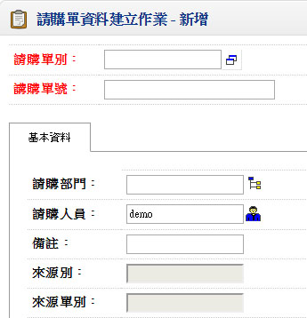
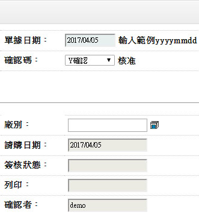
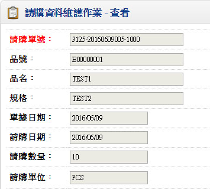
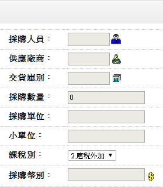
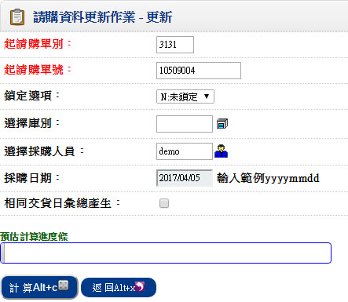
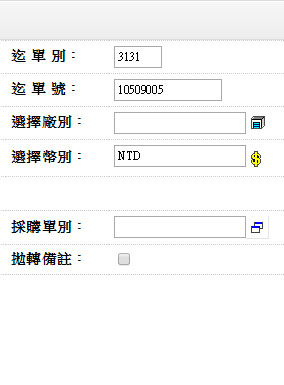

歡迎來到 PHP雲端ERP 的世界
PHP 是開發 雲端ERP 應用程式的工具組。提供簡易的介面和邏輯結構來使用豐富的函式庫，其目的是讓你加 快開發速度。使用 PHP 只需要寫少少的程式，創造力可專注在專案開發。
雲端ERP 使用手冊目錄
肆、請購資料管理
1.請購資料建立作業
■程式代號：PURI05
■程式名稱：請購資料建立作業
■作業目的：請購作業乃基於內部管理需求，在對外發出採購單前，先進行需求的審查，由授權主管審查這些需求的合理性（包括日期、數量、單位及來源）。請購作業常被使用於超耗用料的補料審查或獨立於MRP/LRP 的採購計劃前的需求審查。
■輸入畫面：
 - ■重要欄位說明：
- 來源別
- 計分為以下四種：
1.MRP 2.LRP 3.再補貨建議表 9.其他
- 來源單別
- 可自由輸入，本欄位將來由MRP／LRP／再補貨建議表自動產生時可留下記錄
- 需求日期
- 檢視日期合理性，先判斷工廠行事曆，若無工廠行事曆則依萬年曆為準
- 預設需求日期＝請購日期＋固定前置天數＋（採購數量換算為庫存單位後之數量）／批量×變動前置天數
2.請購資料維護作業
■程式代號：PURI06
■程式名稱：請購資料維護作業
■作業目的：採購人員針對品號管轄範圍的已確認的請購單資料，進行採購前的詢、比、議價作業，並做採購發單前最後相關資料的確認。
■輸入畫面：
 - ■重要欄位說明：
- 採購人員
- 預設該「品號資料建立作業」之『採購人員』，可修改
- 供應廠商
- 預設該「品號資料建立作業」之『主供應商』，可修改
- 交貨庫別
- 來源為請購單資料，預設「品號資料建立作業」之『主要庫別』
- 採購數量
- 來源為請購單資料，可修改
- 採購單位、小單位
- 若採購單位不是庫存單位則必須為任一換算單位
- 採購單價
- 此欄位必須大於等於0，預設品號廠商資料，可修改
- 採購金額
- 金額＝單價×數量
- 交貨日
- 由請購單而來，檢查日期合理性，先判斷工廠行事曆，若無工廠行事曆則依萬年曆為準
- 鎖定碼
- 為方便採購人員進行請購單的管理，提供鎖定碼的資料區隔
- 當採購人員審查過請購單時，可將鎖定碼『ˇ』，表示這筆請購單將更新為採購單，未『 』表示本請購單並未經過審查，所以還不能產生採購單
- 本欄位為請購單更新採購單的一個選項欄位，使用者可善加利用
- 採購碼
- 顯示欄位，當本請購單序號已經執行過「請購資料更新作業」後，將可查得採購單單號，而採購碼將顯示『ˇ』，表示已採購
- 採購單號
- 顯示欄位，當本請購單序號已經執行過「請購資料更新作業」後，將可查得採購單單號
- 製造商
- 指料件承認之合格廠商
3.請購資料更新作業
■程式代號：PURB01
■程式名稱：請購資料更新作業
■作業目的：採購人員針對品號管轄範圍的已確認的請購單資料，進行採購前的詢、比、議價作業，並做採購發單前最後相關資料的確認。
■輸入畫面：
 - ■重要欄位說明：
- 相同預交日彙總產生
- 若選擇為要彙總，則將數量進行累加
- ■作業重點：
- 若採購單設為直接確認，則執行本作業後採購單即同時核准生效
- 更新後，請購資料建立的『採購碼』顯示『ˇ』，且查詢得到對應的『採購單號』
- 已產生採購單之請購單，請購單不可進行修改刪除